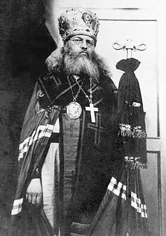
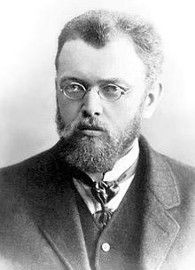
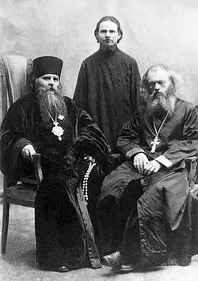
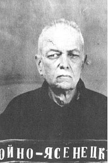
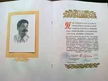
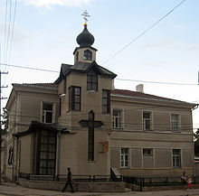
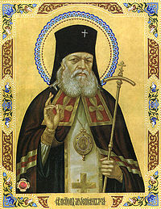
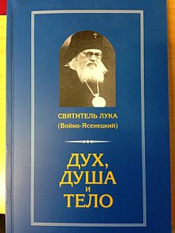
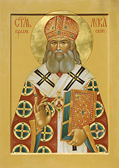
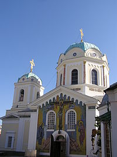

Архиепи́скоп Лука́ (в миру Валенти́н Фе́ликсович Во́йно-Ясене́цкий; 27 апреля (9 мая) 1877, Керчь — 11 июня 1961, Симферополь) — хирург, профессор медицины и духовный писатель, епископ Русской православной церкви; с апреля 1946 года — архиепископ Симферопольский и Крымский. Лауреат Сталинской премии первой степени (1946).
Архиепи́скоп Лука́ стал жертвой политических репрессий и провёл в ссылке в общей сложности 11 лет. Реабилитирован в апреле 2000 года. Украинская православная церковь причислила Архиепископа Луку к лику святых 22 ноября 1995 г; в августе 2000 года канонизирован Русской православной церковью в сонме новомучеников и исповедников Российских для общецерковного почитания; память — 29 мая (11 июня).
Cодержание
Родился 27 апреля (9 мая) 1877 года в Керчи, в семье провизора Феликса Станиславовича Войно-Ясенецкого и Марии Дмитриевны Войно-Ясенецкой (урождённая Кудрина). Был четвёртым из пятерых детей. Принадлежал к древнему и знатному, но обедневшему белорусскому полонизированному дворянскому роду Войно-Ясенецких. Дед его держал мельницу в Сенненском уезде Могилёвской губернии, жил в курной избе и ходил в лаптях. Отец, Феликс Станиславович, получив образование провизора, открыл свою аптеку в Керчи, но владел ею только два года, после чего стал служащим транспортного общества.
В 1889 году семья переехала в Киев, где Валентин окончил гимназию и художественную школу.
Феликс Станиславович, будучи убеждённым католиком, не навязывал семье своих религиозных взглядов. Семейные отношения в доме определяла мать, Мария Дмитриевна, воспитывавшая детей в православных традициях и активно занимавшаяся благотворительностью (помогала арестантам, позднее — раненым Первой мировой войны). По воспоминаниям архиепископа
« Религиозного воспитания я не получил, если говорить о наследственной религиозности, то, вероятно, я унаследовал её от отца. »После окончания гимназии стал перед выбором жизненного пути между медициной и рисованием. Подал документы в Академию Художеств, но, поколебавшись, решил выбрать медицину как более полезную обществу. Пытался поступить в Киевский университет на медицинский факультет, но не прошёл. Получив предложение обучаться на естественном факультете, отдавая предпочтение гуманитарным наукам (не любил биологию и химию), он выбрал юридический. Проучившись год, покинул университет. Брал уроки живописи в частной школе профессора Книрра (Мюнхен). Вернувшись в Киев, рисовал с натуры обывателей. Наблюдая нищету, бедность, болезни и страдания простолюдинов, принял окончательное решение стать врачом, чтобы приносить пользу обществу.
Ещё в Киевском госпитале Красного Креста Валентин познакомился с сестрой милосердия Анной Васильевной Ланской, которую называли «святой сестрой» за доброту, кротость и глубокую веру в Бога, к тому же она дала обет безбрачия. Её руки просили два врача, но она отказывала. А Валентин сумел добиться её расположения, и в конце 1904 года они обвенчались в церкви Михаила Архангела, построенной в 1698 году. (В ней венчались декабрист Анненков и Полина Гебль, поэтому за старинным храмом закрепилось название «Церкви декабристов»). В дальнейшем при работе Анна Васильевна оказывала мужу важную помощь в амбулаторном приёме и в ведении истории болезней.
Один из излеченных офицеров пригласил молодую семью к себе в Симбирск. После недолгого пребывания в губернском городе, Валентин Феликсович устроился земским врачом в уездный город Ардатов. В крошечной больнице, персонал которой состоял из заведующего и фельдшера, Валентин Феликсович трудился по 14-16 часов в сутки, сочетая универсальную врачебную работу с организационно-профилактическими работами в земстве.
В Ардатове молодой хирург столкнулся с опасностями применения наркоза и задумался о возможности применения местной анестезии. Прочёл только что вышедшую книгу немецкого хирурга Генриха Брауна «Местная анестезия, её научное обоснование и практические применения». Плохое качество работы земского персонала и чрезмерная перегруженность (около 20000 человек в уезде + ежедневная обязанность посещать больных на дому, при том, что радиус поездок мог составлять до 15 вёрст!) вынудили Валентина Феликсовича покинуть Ардатов.
В ноябре 1905 года семья Войно-Ясенецких переехала в село Верхний Любаж Фатежского уезда Курской губернии. Земская больница на 10 коек ещё не была достроена, и Валентин Феликсович принимал на выездах и на дому. Время приезда совпало с развитием эпидемии брюшного тифа, кори и оспы. Валентин Феликсович брал на себя поездки по районам эпидемии, стремился не щадя себя помогать больным. Кроме того он опять участвовал в земской работе, занимаясь проведением профилактическо-организационных работ. Молодой врач пользовался большим авторитетом, к нему обращались крестьяне всей Курской и соседней Орловской губернии.
В конце 1907 года Валентин Феликсович был переведён в Фатеж, где у него родился сын Михаил. Однако проработал там хирург недолго: исправник-черносотенец добился его увольнения за отказ прекратить оказание помощи пациенту и явиться по его срочному вызову. Валентин Феликсович одинаково относился ко всем людям, не различая их по положению и достатку. В докладах «наверх» он был объявлен «революционером». Семья переехала к родным Анны Васильевны в город Золотоноша, где у них родилась дочь Елена.
Осенью 1908 года Валентин Феликсович уехал в Москву и поступил в экстернатуру при московской хирургической клинике известного профессора Дьяконова, основателя журнала «Хирургия». Стал писать докторскую диссертацию на тему регионарной анестезии. Занимался анатомической практикой в Институте топографической анатомии, директором которого был профессор Рейн, председатель Московского хирургического общества. Но ни Дьяконов, ни Рейн ничего не знали о регионарной анестезии. Валентин Феликсович разработал методику проверки, нашёл те нервные волокна, которые соединяли оперируемый участок тела с головным мозгом: вводил в глазницу трупа с помощью шприца небольшое количество горячего подкрашенного желатина. Затем проводил тщательное препарирование тканей глазницы, в процессе которого устанавливалось анатомическое положение ветви троичного нерва, а также оценивалась точность попадания желатина в приневральное пространство нервного ствола. В целом он провёл колоссальную работу: прочёл более пятисот источников на французском и немецком языках, при том, что французский он учил с нуля.
В конце Валентин Феликсович стал считать свои методы проведения регионарной анестезии более предпочтительными, чем предложенные Г. Брауном. 3 марта 1909 на заседании хирургического общества в Москве Войно-Ясенецкий сделал свой первый научный доклад.
Анна Васильевна просила мужа забрать к себе семью. Но Валентин Феликсович не мог их принять по финансовым соображениям. И он всё сильнее задумывался о перерыве в научной работе и возвращении в практическую хирургию.
В начале 1909 года Валентин Феликсович подал прошение и был утверждён в должности главного врача больницы села Романовка Балашовского уезда Саратовской губернии. Семья прибыла туда в апреле 1909. Снова Валентин Феликсович оказался в тяжёлом положении: его врачебный участок по площади составлял около 580 квадратных вёрст, с населением до 31 тысячи человек. И он снова занялся универсальной хирургической работой по всем разделам медицины а также изучал гнойные опухоли под микроскопом, что в земской больнице было просто немыслимым. Однако было проведено меньше операций под местным обезболиванием, что говорило о существенном увеличении серьёзных операционных вмешательств, где одного лишь местного обезболивания было недостаточно. Валентин Феликсович записывал результаты своих работ, составляя научные труды, которые публиковались в журналах «Труды Тамбовского физико-медицинского общества» и «Хирургия». Также он занимался «проблемами молодых врачей», в августе 1909 обратился к уездной земской управе с предложениями создать уездную медицинскую библиотеку, ежегодно публиковать отчёты о деятельности земской больницы и создание патологоанатомического музея для исключения врачебных ошибок. Одобрена была только библиотека, открывшаяся в августе 1910.
Весь отпуск он проводил в московских библиотеках, анатомических театрах и на лекциях. Однако долгий путь между Москвой и Романовкой был неудобен, и в 1910 году Войно-Ясенецкий подал прошение на вакантное место главного врача больницы Переславль-Залесского Владимирской губернии. Практически перед отъездом родился сын Алексей.
В Переславле-Залесском Валентин Феликсович возглавил городскую, а вскоре — и фабричную, и уездную больницы, а также военный госпиталь. Кроме того, отсутствовала рентгеновская аппаратура, в фабричной больнице не было электричества, канализации и водопровода. На более чем 100-тысячное население уезда приходилось всего 150 больничных коек и 25 хирургических. Доставка больных могла достигать несколько суток. И снова Валентин Феликсович спасал самых тяжёлых больных и продолжал изучать научную литературу. В 1913 году родился сын Валентин.
В 1915 году издал в Петрограде книгу «Регионарная анестезия» с собственными иллюстрациями. На смену прежним способам слойного пропитывания анестезирующим раствором всего, что надо резать, пришла новая, изящная и привлекательная методика местной анестезии, в основу которой легла глубоко рациональная идея прервать проводимость нервов, по которым передаётся болевая чувствительность из области, подлежащей операции. В 1916 году Валентин Феликсович защитил эту работу как диссертацию и получил степень доктора медицины. Однако книгу издали таким низким тиражом, что у автора не нашлось даже экземпляра для отправки в Варшавский университет, где он мог бы получить за неё премию (900 рублей золотом). В Переяславле он задумал новый труд, которому сразу дал название — «Очерки гнойной хирургии».
В Феодоровском женском монастыре, где Валентин Феликсович был врачом, до сего дня чтится память его. Монастырская деловая переписка неожиданно приоткрывает ещё одну сторону деятельности врача-бессребренника, которую Валентин Феликсович Войно-Ясенецкий не посчитал нужным упомянуть в своих записях. Приведем полностью два письма, где упоминается имя доктора Ясенецкого-Войно (по принятому тогда написанию):
« Глубокоуважаемая матушка Евгения!
Так как фактически врачом Феодоровского монастыря состоит Ясенецкий-Войно, я же по-видимому числюсь только на бумаге, то я считая для себя такой порядок вещей оскорбительным, отказываюсь от звания врача Феодоровского монастыря; о каковом своем решении и спешу Вас уведомить. Примите уверение в моем совершенном к Вам уважении.
Врач… 30. 12. 1911 г. »
« Во Владимирское Врачебное отделение Губернского правления.
Сим честь имею покорнейше уведомить: Врач Н… оставил службу при вверенном моему смотрению Феодоровском монастыре в начале февраля, а с оставлением службы врачом Н…, всё время подает медицинскую помощь врач Валентин Феликсович Ясенецкий-Войно. При большом количестве живущих сестер, равно и членам семейств священнослужителей, необходима врачебная помощь и, видя эту нужду монастыря, врач Ясенецкий-Войно и подал мне письменное заявление 10 марта полагать свои труды безвозмездно.
Феодоровского девича монастыря игумения Евгения. »
Войно-Ясенецкие прибыли в Ташкент в марте. Эта больница была устроена намного лучше, чем земские, однако и здесь же было мало специалистов и слабое финансирование; отсутствовала система канализационных стоков и биологическая очистка сточных вод, что в условиях жаркого климата и частых эпидемий, включая холеру, могло повлечь превращение больницы в постоянно действующий резервуар опасных инфекций. У здешних людей были свои особенные болезни и травмы: например, на лечение одновременно приходило множество детей и взрослых с серьёзными ожогами стоп и голеней. Это происходило от того, что местные жители использовали для обогрева своих жилищ горшок с горячими углями, на ночь его ставили в центр комнаты и ложились спать ногами к горшку. При чьём-либо неосторожном движении горшок опрокидывался. С другой стороны, опыт и знания Валентина Феликсовича были полезны местным врачам: с конца 1917 года в Ташкенте происходили уличные перестрелки, в больницы поступало много раненых.
В январе 1919 произошло антибольшевистское восстание под руководством К. П. Осипова. После его подавления на горожан обрушились репрессии: в железнодорожных мастерских вершила революционный суд «тройка», обычно приговаривавшая к расстрелу. В больнице лежал тяжелораненый казачий есаул В. Т. Комарчев. Валентин Феликсович отказался выдавать его красным и тайно лечил, укрывая на своей квартире. Некий служитель морга по имени Андрей, дебошир и пьяница, донёс об этом в ЧК. Войно-Ясенецкий и ординатор Ротенберг были арестованы, но до рассмотрения дела их заметил один из известных деятелей Туркестанской ячейки РКП(б), который знал Валентина Феликсовича в лицо. Он расспросил их и отправил обратно в больницу. Валентин Феликсович, вернувшись в больницу, распорядился готовить больных к операции, как будто ничего не случилось.
Арест мужа нанёс здоровью Анны Васильевны серьёзный удар, болезнь резко усилилась, и в конце октября 1919 года она скончалась. В последнюю ночь для ослабления страданий жены он впрыскивал ей морфий, но отравляющего эффекта не видел. Две ночи после кончины Валентин Феликсович читал над гробом Псалтирь. Он остался с четырьмя детьми, старшему из которых было 12, а младшему — 6 лет. В дальнейшем дети жили у медицинской сестры из его больницы Софьи Сергеевны Белецкой.
Несмотря на всё, Валентин Феликсович вёл активную хирургическую практику и способствовал основанию в конце лета 1919 года Высшей Медицинской школы, где преподавал нормальную анатомию. В 1920 году был образован Туркестанский Государственный Университет. Декан Медицинского факультета П. П. Ситковский, знакомый с работами Войно-Ясенецкого по регионарной анестезии, добился его согласия возглавить кафедру оперативной хирургии.
Валентин Феликсович тяжело переживал кончину своей супруги. После этого его религиозные взгляды укрепились:
«Неожиданно для всех, прежде чем начать операцию, Войно-Ясенецкий перекрестился, перекрестил ассистента, операционную сестру и больного. В последнее время он это делал всегда, вне зависимости от национальности и вероисповедания пациента. Однажды после крестного знамения больной — по национальности татарин — сказал хирургу: „Я ведь мусульманин. Зачем же Вы меня крестите?“ Последовал ответ: „Хоть религии разные, а Бог один. Под Богом все едины“».Профессор Войно-Ясенецкий регулярно посещал воскресные и праздничные богослужения, был активным мирянином, сам выступал с беседами о толковании Священного писания. В конце 1920 года он присутствовал на епархиальном собрании, где произнёс речь о положениях дел в Ташкентской епархии. Под впечатлением этого епископ Туркестанский и Ташкентский Иннокентий (Пустынский) предложил Валентину Феликсовичу стать священником, на что он сразу согласился. Уже через неделю был посвящён в чтеца, певца и иподьякона, затем — в дьякона, а 15 февраля 1921 года в день Сретения — в иерея. И в больницу, и в университет отец Валентин стал приходить в рясе с крестом на груди, кроме того он установил в операционной иконы Божьей Матери и стал молиться перед началом операции. Отец Валентин был назначен четвёртым священником собора, служил только по воскресеньям и на него легла обязанность проповеди. Епископ Иннокентий пояснил его роль в богослужении словами апостола Павла: «Ваше дело не крестити, а благовестити».
« Мне, иерею, голыми руками защищавшему стадо Христово, от целой стаи волков и ослабленному в неравной борьбе, в момент наибольшей опасности и изнеможения Господь дал жезл железный, жезл архиерейский и великой благодатью святительской мощно укрепил на дальнейшую борьбу за целостность и сохранение Туркестанской епархии. »На следующий день, 4 июня, в стенах ТГУ состоялся студенческий митинг, на котором было принято постановление с требованием увольнения профессора Войно-Ясенецкого. Руководство университета отвергло это постановление и даже предложило Валентину Феликсовичу руководить ещё одной кафедрой. Но он сам написал заявление об уходе. 5 июня он в последний раз, уже в епископском облачении, присутствовал на заседании научного медицинского общества при ТГУ.
Епископу Луке, а также арестованным с ним епископу Андрею и протоиерею Михаилу Андрееву были предъявлены обвинения по статьям 63, 70, 73, 83, 123 Уголовного Кодекса. Ходатайства прихожан об официальной выдаче заключённых и ходатайства больных о консультации профессора Войно-Ясенецкого были отклонены. 16 июня 1923 года Лука написал завещание, в котором призывал мирян оставаться верными Патриарху Тихону, противостоять церковным движениям, выступающим за сотрудничество с большевиками (оно было передано на волю через верующих сотрудников тюрьмы):
«… Завещаю вам: непоколебимо стоять на том пути, на который я наставил вас. …Идти в храмы, где служат достойные иереи, вепрю не подчинившиеся. Если и всеми храмами завладеет вепрь, считать себя отлучённым Богом от храмов и ввергнутым в голод слышания слова Божьего. …Против власти, поставленной нам Богом по грехам нашим, никак нимало не восставать и во всём ей смиренно повиноваться»Вот фрагмент допроса епископа Луки:
«… Я тоже полагаю, что очень многое в программе коммунистов соответствует требованиям высшей справедливости и духу Евангелия. Я тоже полагаю, что власть рабочих есть самая лучшая и справедливая форма власти. Но я был бы подлым лжецом перед правдой Христовой, если бы своим епископским авторитетом одобрил бы не только цели революции, но и революционный метод. Мой священный долг учить людей тому, что свобода, равенство и братство священны, но достигнуть их человечество может только по пути Христову — пути любви, кротости, отвержения от себялюбия и нравственного совершенствования. Учение Иисуса Христа и учение Карла Маркса — это два полюса, они совершенно несовместимы и потому Христову правду попирает тот, кто, прислушиваясь к Советской власти, авторитетом церкви Христовой освящает и покрывает все её деяния»В заключении изложены выводы следствия — епископам Андрею, Луке и протоиерею Михаилу приписывались обвинения:
«На допросе чекист спрашивал меня о моих политических взглядах и о моем отношении к Советской власти. Услышав, что я всегда был демократом, он поставил вопрос ребром: „Так кто Вы — друг или враг наш?“ Я ответил: „И друг и враг. Если бы я не был христианином, то, вероятно, стал бы коммунистом. Но Вы возглавили гонение на христианство, и поэтому, конечно, я не друг Ваш“.После долгого следствия 24 октября 1923 года комиссия НКВД вынесла решение о высылке епископа в Нарымский край. 2 ноября Лука был переведён в Таганскую тюрьму, где находился пересыльный пункт. В конце ноября он отправился в свою первую ссылку, местом которой первоначально был назначен Енисейск.
«Ваше преосвященство и дорогой товарищ! Глубоко тронут Вашим теплым приветствием и приношу за него сердечную благодарность. В тяжелое время, полное неотступной скорби для думающих и чувствующих по-человечески, остаётся одна опора — исполнение по мере сил принятого на себя долга. Всей душой сочувствую Вам в Вашем мученичестве. Искренне преданный Вам Иван Павлов».Идеи ссыльного профессора-хирурга В. Ф. Войно-Ясенецкого распространяются не только в Советском Союзе, но и за рубежом. В 1923 году в немецком медицинском журнале «Deutsch Zeitschrift» публикуется его статья о новом методе перевязки артерии при удалении селезёнки, а в 1924-м в «Вестнике хирургии» — сообщение о хороших результатах раннего хирургического лечения гнойных процессов крупных суставов.
В Ташкенте был разрушен кафедральный собор, осталась только церковь Сергия Радонежского, в которой служили священники-обновленцы. Протоиерей Михаил Андреев требовал от епископа Луки освятить этот храм; после отказа от этого Андреев перестал ему подчиняться и доложил обо всём местоблюстителю патриаршего престола Сергию, митрополиту Московскому и Коломенскому, который стал пытаться перевести Луку то в Рыльск, то в Елец, то в Ижевск. По совету ссыльного митрополита Новгородского Арсения Лука подал прошение об увольнении на покой, которое было удовлетворено.
Профессор Войно-Ясенецкий не был восстановлен на работу ни в городскую больницу, ни в университет. Валентин Феликсович занялся частной практикой[78]. По воскресным и праздничным дням служил в церкви, а дома принимал больных, число которых достигало четырёхсот в месяц. Кроме того, вокруг хирурга постоянно находились молодые люди, добровольно помогавшие ему, учились у него, а тот посылал их по городу искать и приводить больных бедных людей, которым нужна врачебная помощь. Таким образом, он пользовался большим авторитетом среди населения.
Тогда же он отправил на рецензирование в государственное медицинское издательство экземпляр законченной монографии «Очерки гнойной хирургии». После годового рассмотрения она была возвращена с одобрительными отзывами и рекомендацией к публикации после незначительной доработки.
5 августа 1929 года покончил с собой профессор-физиолог Среднеазиатского (бывшего Ташкентского) университета И. П. Михайловский, который вёл научные исследования по превращению неживой материи в живую, пытавшийся воскресить своего умершего сына; итогом его работ стало психическое расстройство и самоубийство. Его жена обратилась к профессору Войно-Ясенецкому с просьбой провести похороны по христианским канонам (для самоубийц это возможно только в случае сумасшествия); Валентин Феликсович подтвердил его сумасшествие медицинским заключением.
Во второй половине 1929 года ОГПУ было сформировано уголовное дело: убийство Михайловского якобы было совершено его «суеверной» женой, имевшей сговор с Войно-Ясенецким, чтобы не допустить «выдающегося открытия, подрывающего основы мировых религий». 6 мая 1930 — он был арестован. Обвинялся по статьям 10-14 и 186 п.1 УК УзССР. Валентин Феликсович объяснял свой арест ошибками местных чекистов и из тюрьмы писал руководителям ОГПУ с просьбами выслать его в сельскую местность Средней Азии, затем — с просьбой выслать из страны, в том числе председателю СНК А. И. Рыкову. В качестве аргументов в пользу своего освобождения и отправки в ссылку он писал о скорой возможности публикации «Очерков гнойной хирургии», которые пошли бы на пользу советской науке — и предложение основать клинику гнойной хирургии. По запросу МедГиза последственному Войно-Ясенецкому была передана рукопись, которую он заканчивал в тюрьме, как и начинал.
Во второй половине августа 1931 года Войно-Ясенецкий прибыл в Северный край. Сначала он отбывал заключение в ИТЛ «Макариха» возле города Котлас, вскоре на правах ссыльного был переведён в Котлас, затем — в Архангельск, где вёл амбулаторный приём. В 1932 году поселился у В. М. Вальнёвой, потомственной знахарки. Оттуда его вызывали в Москву, где особый уполномоченный коллегии ГПУ предлагал хирургическую кафедру в обмен за отказ от священнического сана.
« При нынешних условиях я не считаю возможным продолжать служение, однако сана я никогда не сниму »После освобождения в ноябре 1933 он ездил в Москву, где встречался с митрополитом Сергием, но отказался от возможности занять какую-либо архиерейскую кафедру, потому что надеялся основать НИИ гнойной хирургии. Войно-Ясенецкий получил отказ наркома здравоохранения Фёдорова, но тем не менее, сумел добиться публикации «Очерков гнойной хирургии», которая должна была состояться в первом полугодии 1934 года. Далее он по совету одного из архиереев «без всякой разумной цели» поехал в Феодосию, затем «принял бестолковое решение» поехать в Архангельск, где 2 месяца вёл приём в амбулатории; «немного опомнившись», уехал в Андиджан, а потом вернулся в Ташкент.
24 июля 1937 года арестован в третий раз. В вину епископу вменялось создание «контрреволюционной церковно-монашеской организации», проповедовавшей следующие идеи: недовольство советской властью и проводимой политикой, контрреволюционные взгляды о внутреннем и внешнем положении СССР, клеветнические взгляды о компартии и вожде народов, пораженческие взгляды в отношении СССР в предстоящей войне с Германией, указывание на скорое падение СССР, то есть преступления, предусмотренные ст. 66 ч. 1, ст. 64 и 60 УК УзССР. Следствие получило признания в контрреволюционной деятельности проходивших по тому же делу епископов Евгения (Кобранова), Бориса (Шипулина), Валентина (Ляходского), иереев Михаила Андреева, Венедикта Багрянского, Ивана Середы и других о существовании контрреволюционной организации и планов по созданию сети контрреволюционных групп при церковных общинах, а также о вредительской деятельности Войно-Ясенецкого — убийствах пациентов на операционном столе, и шпионаже в пользу иностранных государств.
Несмотря на длительные допросы методом «конвейера» (13 суток без сна), Лука отказывался признаваться о членстве в контрреволюционной организации и называть имена «заговорщиков». Вместо этого он объявляет голодовку, продлившуюся 18 суток. О своих политических взглядах сообщал следующее:
«Что касается политической приверженности, я являюсь до сих пор сторонником партии кадетов… я был и остаюсь приверженцем буржуазной формы государственного управления, которая существует во Франции, США, в Англии… Я являюсь идейным и непримиримым врагом Советской власти. Это враждебное отношение у меня создалось после Октябрьской революции и осталось до сего времени … так как не одобрял её кровавых методов насилия над буржуазией, а позднее, в период коллективизации мне было особенно мучительно видеть раскулачивание кулаков.В начале 1938 года так ни в чём не признавшийся епископ Лука был переведён в центральную областную тюрьму Ташкента. Уголовное дело в отношение группы священников было возвращено из Москвы на доследование, и материалы в отношение Войно-Ясенецкого были выделены в отдельное уголовное производство. Летом 1938 были вызваны бывшие коллеги профессора Войно-Ясенецкого из ТашМИ Г. А. Ротенберг, М. И. Слоним, Р. Федермессер, которые сообщили о его контрреволюционной деятельности.
… Большевики — враги нашей Православной церкви, разрушающие церкви и преследующие религию, враги мои, как одного из активных деятелей церкви, епископа».
«Я всегда был прогрессистом, очень далёким не только от черносотенства и монархизма, но и от консерватизма; к фашизму отношусь особенно отрицательно. Чистые идеи коммунизма и социализма, близкие к Евангельскому учению, мне были всегда родственными и дорогими; но методов революционного действия я, как христианин, никогда не разделял, а революция ужаснула меня жестокостью этих методов. Однако я давно примирился с нею, и мне весьма дороги её колоссальные достижения; особенно это относится к огромному подъёму науки и здравоохранения, к мирной внешней политике Советской власти и к мощи Красной Армии, охранительницы мира. Из всех систем государственного устройства Советский строй я считаю, без всякого сомнения, совершеннейшим и справедливым. Формы государственного строя США, Франции, Англии, Швейцарии я считаю наиболее удовлетворительными из буржуазных систем. Признать себя контрреволюционером я могу лишь в той мере, в какой это вытекает из факта заповеди Евангелия, активным же контрреволюционером я никогда не был…»Ввиду расстрела основных свидетелей, дело рассматривалось на Особом совещании НКВД СССР. Приговор пришёл только в феврале 1940 года: 5 лет ссылки в Красноярский край.
С марта 1940 года работал хирургом в ссылке в районной больнице в Большой Мурте, что в 100 километрах от Красноярска. Осенью 1940 года ему разрешили выехать в Томск, в городской библиотеке он изучал новейшую литературу по гнойной хирургии, в том числе на немецком, французском и английском языках. На основании этого было закончено второе издание «Очерков гнойной хирургии».
В начале Великой Отечественной войны отправил телеграмму председателю президиума Верховного совета СССР Михаилу Калинину:
«Я, епископ Лука, профессор Войно-Ясенецкий… являясь специалистом по гнойной хирургии, могу оказать помощь воинам в условиях фронта или тыла, там, где будет мне доверено. Прошу ссылку мою прервать и направить в госпиталь. По окончании войны готов вернуться в ссылку. Епископ Лука».Телеграмму в Москву не передали, а в соответствии с существующими распоряжениями направили в крайком. С октября 1941 года профессор Войно-Ясенецкий стал консультантом всех госпиталей Красноярского края и главным хирургом эвакогоспиталя. Он работал по 8-9 часов, делая 3-4 операции в день, что в его возрасте приводило к неврастении. Тем не менее, каждое утро он молился в пригородном лесу (в Красноярске в это время не осталось ни одной церкви).
« … в служении Богу вся моя радость, вся моя жизнь, ибо глубока моя вера… Однако и врачебной, и научной работы я не намерен оставлять.Летом 1943 года впервые получил разрешение выехать в Москву, участвовал в Поместном Соборе, который избрал патриархом митрополита Сергия (Страгородского); также стал постоянным членом Священного Синода, который собирался раз в месяц. Однако вскоре он отказался участвовать в деятельности Синода, так как длительность пути (около 3 недель) отрывала его от медицинской работы; в дальнейшем стал просить о переводе в Европейскую часть СССР, мотивируя это ухудшающимся здоровьем в условиях сибирского климата. Местная администрация не хотела его отпускать, пыталась улучшить его условия — поселила в лучшую квартиру, доставляла новейшую медицинскую литературу, в том числе на иностранных языках. Тем не менее, в начале 1944 года получил телеграмму о переводе в Тамбов.
« … если бы ты знал, как туп и ограничен атеизм, как живо и реально общение с Богом любящих Его. »
В феврале 1944 года Военный госпиталь переехал в Тамбов, и Лука возглавил Тамбовскую кафедру. 4 мая 1944 года во время беседы в Совете по делам Русской православной церкви при СНК СССР Патриарха Сергия с председателем Совета Карповым, Патриарх поднял вопрос о возможности его перемещения на Тульскую епархию, мотивировал такую необходимость болезнью архиепископа Луки (малярия); в свою очередь, Карпов «ознакомил Сергия с рядом неправильных притязаний со стороны архиепископа Луки, неправильных его действий и выпадов». В служебной записке наркому здравоохранения РСФСР Андрею Третьякову от 10 мая 1944 года Карпов, указывая на ряд допущенных архиепископом Лукой поступков, «нарушающих законы СССР» (повесил икону в хирургическом отделении эвакогоспиталя № 1414 в Тамбове, совершал религиозные обряды в служебном помещении госпиталя перед проведением операций; 19 марта явился на межобластное совещание врачей эвакогоспиталей одетым в архиерейское облачение, сел за председательский стол и в этом же облачении сделал доклад по хирургии и другое), указывал наркому, что «Облздравотдел (г. Тамбов) должен был сделать соответствующее предупреждение профессору Войно-Ясенецкому и не допускать противозаконных действий, изложенных в настоящем письме.»
Кафедральным храмом архиепископа Луки стала открытая за полгода до его приезда в Тамбов городская Покровская церковь (вся епархия в 1944 году насчитывала три действующих храма); она практически не была обеспечена предметами богослужения: иконы и иные церковные принадлежности были принесены прихожанами. Архиепископ Лука стал активно проповедовать, проповеди (всего 77) записывались и распространялись. Открытия бывшего кафедрального Спасо-Преображенского собора добиться не удалось; тем не менее, к 1 января 1946 года было открыто 24 прихода. Архиепископ составил чин покаяния для священников-обновленцев, а также разработал план возрождения религиозной жизни в Тамбове, где, в частности предлагалось проводить религиозное просвещение интеллигенции, открытие воскресных школ для взрослых. Этот план был отвергнут Синодом. Среди прочей деятельности Луки — создание архиерейского хора, многочисленные произведения прихожан в священники.
Под руководством архиепископа Луки за несколько месяцев 1944 года для нужд фронта было перечислено более 250 тыс. руб. на строительство танковой колонны имени Дмитрия Донского и авиаэскадрильи имени Александра Невского. В общей же сложности за неполные два года было перечислено около миллиона рублей.
В феврале 1945 года награждён патриархом Алексием I правом ношения на клобуке бриллиантового креста. В декабре 1945 года за помощь Родине архиепископ Лука был награждён медалью «За доблестный труд в Великой Отечественной войне»
В начале 1946 года постановлением СНК СССР с формулировкой «За научную разработку новых хирургических методов лечения гнойных заболеваний и ранений, изложенных в научных трудах „Очерки гнойной хирургии“, законченном в 1943 году и „Поздние резекции при инфицированных огнестрельных ранениях суставов“, опубликованном в 1944 году», профессору Войно-Ясенецкому была присуждена Сталинская премия первой степени в размере 200000 рублей, из которых 130 тысяч рублей он передал на помощь детским домам.
Указом Патриарха от 5 апреля 1946 года переведён в Симферополь. Отношения с местным начальством не сложились: после приезда архиепископ не явился лично уполномоченному по делам Русской Православной Церкви Я. Жданову, что вызвало разногласие между ними. По свидетельству Я. Жданова, Лука за любое нарушение канонических правил мог лишить священника сана, уволить за штат, перевести с одного прихода на другой; священников же, бывших в заключении и в ссылках, приближал к себе, назначал на лучшие приходы, и всё это делалось без согласования с уполномоченным.
Продолжал публиковать статьи, выступая за проводимый СССР внешнеполитический курс. В статье «„К миру призвал нас Господь“» (1948) выступил с резким осуждением политики США и католического духовенства, с безоговорочной апологией политики властей СССР в отношении Церкви: Поджигатели войны, смертельно испуганные призраком коммунизма, всякого не по-фашистки мыслящего причисляют к коммунистам. Вся масса католического духовенства стала на сторону поджигателей войны и явно сочувствует фашизму. Каково же наше подлинное отношение к нашему Правительству, к нашему новому государственному строю? Прежде всего, мы, русское духовенство, живем в полном мире с нашим Правительством, и у нас невозможно благословение священников на участие в контрреволюционных или террористических бандах, как это было в Загребе. У нас нет никаких поводов к вражде против Правительства, ибо оно предоставило полную свободу Церкви и не вмешивается в ее внутренние дела.»
В начале 1947 года стал консультантом Симферопольского военного госпиталя, где проводил показательные оперативные вмешательства. Также он стал читать лекции для практических врачей Крымской области в архиерейском облачении, из-за чего они были ликвидированы местной администрацией. В 1949 году начал работу над вторым изданием «Регионарной анестезии», которое не было закончено, а также над третьим изданием «Очерков гнойной хирургии», которое было дополнено профессором В. И. Колёсовым и издано в 1955.
В 1955 году ослеп полностью, что вынудило его оставить хирургию. С 1957 года диктует мемуары. В постсоветское время вышла автобиографическая книга «Я полюбил страдание…».
11 января 1957 года избран почётным членом Московской духовной академии.
В 1958 году писал: «… как трудно мне было плыть против бурного течения антирелигиозной пропаганды и сколько страданий причинила она мне и доныне причиняет».
Активно проповедовал.
В 1959 году Патриарх Алексий предлагал присвоить архиепископу Луке степень доктора богословия.
Умер 11 июня 1961 года в воскресенье, в день Всех святых, в земле Российской просиявших. На надгробии была высечена надпись:
Архиепископ Лука Войно-ЯсенецкийБыл похоронен на Первом Симферопольском кладбище, справа от храма Всех святых г. Симферополя. После канонизации Православной Церковью в сонме новомучеников и исповедников Российских (22 ноября 1995 года), его мощи были перенесены в Свято-Троицкий Собор (17-20 марта 1996 года). Прежняя могила св. Луки также почитаема верующими.
18 (27). IV.1877 — 19 (11).VI.1961
Доктор медицины, профессор хирургии,
лауреат.
Все дети профессора пошли по его стопам и стали медиками: Михаил и Валентин стали докторами медицинских наук; Алексей — доктором биологических наук; Елена — врачом-эпидемиологом. Внуки и правнуки тоже стали учёными , Войно-Ясенецкая Ольга Валентиновна явилась создателем Одесского областного патологоанатомического бюро ООПАБ), Войно-Ясенецкий Алексей Михайлович стал профессором, д.м.н.,урологом, директором центра урологии.
Постановлением Генеральной Прокуратуры РФ от 12 апреля 2000 года в соответствие с законом РФ «О реабилитации жертв политических репрессий» гражданин Войно-Ясенецкий Валентин Феликсович полностью реабилитирован.
Монография святителя стала настольной книгой врачей. До эпохи антибиотиков, когда не было другой возможности бороться с гноем, кроме хирургической, любой молодой хирург, имея эту книгу, мог осуществлять операции в тяжёлых условиях провинциальной больницы. Даже не зная, что книга написана епископом, нельзя не заметить, что её писал человек, с большой любовью относящийся к больным. В ней есть такие строки: «Приступая к операции, надо иметь в виду не только брюшную полость, а всего больного человека, который, к сожалению, так часто у врачей именуется „случаем“. Человек в смертельной тоске и страхе, сердце у него трепещет не только в прямом, но и в переносном смысле. Поэтому не только выполните весьма важную задачу подкрепить сердце камфарой или дигаленом, но позаботьтесь о том, чтобы избавить его от тяжёлой психической травмы: вида операционного стола, разложенных инструментов, людей в белых халатах, масках, резиновых перчатках — усыпите его вне операционной. Позаботьтесь о согревании его во время операции, ибо это чрезвычайно важно».
Работы профессора Войно-Ясенецкого на сегодняшний день всё ещё не систематизированы. Современные авторы ограничиваются преимущественно краткими оценками его роли в гнойной хирургии. К 1917 году Войно-Ясенецкий предстает сложившимся, опытным хирургом, организатором здравоохранения и педагогом, широко оперировавшим больных с заболеваниями желчных путей, желудка и других органов брюшной полости. С успехом работал в таких областях хирургии как нейрохирургия и ортопедия. Это был учёный, готовый к крупным и объективным исследованиям и анализу. Прочтение работ Войно-Ясенецкого призывает объективно констатировать те современные хирургические области и направления, в которых он представлен как известным, так и ещё нами не раскрытым современным исследователям. А именно: теория клинического диагноза, медицинская психология и деонтология, хирургия (включая общую, абдоминальную, торакальную, урологию, ортопедию и другие разделы), военно-полевая хирургия и анестезиология, организация здравоохранения и социальная гигиена.
В. Ф. Войно-Ясенецким был сделан большой вклад в анестезиологию. В 1915 году в Петрограде вышла первая его монография «Регионарная анестезия». В 1916 году он успешно защищает докторскую диссертацию «О регионарной анестезии второй ветви тройничного нерва».
О практической значимости метода регионарной анестезии (синоним «проводниковая анестезия») в развитии отечественной медицины он пишет в приложении к «Очеркам гнойной хирургии»:
« ... значительное большинство смертей, обусловленных применением хлороформа и эфира, зависит от неумелого или недостаточно осторожного применения этих средств, а сельский врач в большинстве случаев вынужден поручать ведение наркоза фельдшеру или акушерке, редко имеющим необходимые теоретические сведения и достаточный навык в этом ответственном деле. Поэтому те способы местной анестезии, которые дают врачу возможность всецело сосредоточиться на операции, имеют огромное значение для начинающего. По моему глубокому убеждению, широкое ознакомление врачей с этими способами составляет одно из важнейших условий процветания и развития хирургии на селе. »Оппонентом на защите Войно-Ясенецкого был хирург А. В. Мартынов. Он так отозвался о представленной диссертации: «Мы привыкли к тому, что докторские диссертации обычно пишутся на заданную тему, с целью получения высших назначений по службе, и научная ценность их невелика. Но когда я читал Вашу книгу, то получил впечатление пения птицы, которая не может не петь, и высоко оценил её». За лучшее сочинение, пролагающее новые пути в медицине, Войно-Ясенецкий был удостоен премии имени Хойнацкого от Варшавского университета.
На первом научном съезде врачей Туркестана (23-28 октября 1922 года) он выступил с четырьмя большими докладами, где делился с коллегами своим богатейшим хирургическим опытом, поведал о собственных наблюдениях и выводах о хирургическом лечении туберкулеза, гнойных воспалительных процессов коленного сустава, сухожилий рук, рёберных хрящей. Нестандартные решения вызывали в прениях бурные споры. Также профессор рассказал о своём способе операции при абсцессах печени. Пытаясь изучить механизм возникновения нагноительных процессов в реберных хрящах после сыпного тифа, Войно-Ясенецкий совместно с врачом-бактериологом Гусельниковым проводил исследования, которые позволили ему с трибуны I съезда врачей Туркестанской республики в октябре 1922 года пророчески предсказать, что «в будущем бактериология сделает ненужными очень многие отделы оперативной хирургии».
Он предложил немало идей использования климата Средней Азии в лечебных целях. Впервые в республике Войно-Ясенецкий сообщил о поразительных результатах лечения костного туберкулеза, достигнутых солнцелечением в высоких горах, и сказал, «что в столь близких от Ташкента Чимганских горах условия для солнцелечения нисколько не хуже, чем в Швейцарии. Должны быть использованы и могучие по действию грязи в Молла-Кора и Яны-Кургане и купания на Аральском море».
Блестящий мастер хирургических операций на органах зрения, предложивший свою оригинальную методику удаления слезного мешка, он обратился к делегатам съезда с призывом, направленным на действенную борьбу с распространенной среди местного населения трахомой — основной причиной слепоты: «Было бы делом огромной важности организовать очень кратковременные курсы для врачей, на которых они познакомились бы с производством разреза роговицы… выпущенном слезного мешка и пересадкой слизистой на веко. Эти 3 операции вполне доступны каждому практическому врачу в самых глухих углах».
Оба предложения профессора Войно-Ясенецкого нашли свое отражение в резолюции I научного съезда врачей Туркестана, профессорам Турбину и Войно-Ясенецкому было поручено составить краткое практическое руководство для врачей по глазным болезням.
Во время работы в военном госпитале в Красноярске, Валентин Феликсович разработал новые операции и, в частности, резекцию суставов. Разработанная им новая хирургическая тактика при остеомиелите крупных суставов — резекция сустава с исходом в анкилоз, распил пяточной кости и другие — спасала конечности солдат. Его деятельность была отмечена грамотой и благодарностью Boeнного совета Сибирского военного округа.
В Тамбовском военном госпитале его нагрузка была колоссальной: в 67 лет он писал по восемь-девять часов в сутки и делал четыре-пять операций ежедневно. В Крыму его не сразу допустили к работе в больнице. Администрация и коллеги были недовольны тем, что Владыка под медицинским халатом носил рясу и крест. Ему не позволили читать лекции в Крымском мединституте. Его доклады в Хирургическом обществе на двух съездах врачей имели большой успех. Но это многим не понравилось, ему ясно дали понять, что делать доклады в архиерейском виде он больше не должен. Так он совсем перестал бывать в хирургическом обществе.
«Очерки гнойной хирургии», были написаны по наблюдениям предшествовавших 30 лет (1916—1946), когда отсутствовали антибиотики и основным методом лечения флегмон являлся хирургический радикализм, обеспечивающий удаление гнойных масс и дренаж раны. Анатомический анализ фасциально-клетчаточных щелей, основа которого была заложена ещё Н. И. Пироговым, остаётся руководящим принципом в распознавании путей распространения гнойных процессов в клетчатке, возможных их осложнений и выбора разрезов для дренирования гнойников. Хотя частота этих заболеваний значительно снизилась в результате внедрения в практику антибиотиков и хорошей организации медицинского обслуживания населения, однако флегмоны клетчаточных пространств занимают ещё видное место в инвалидизации больных. Поэтому в наше время к анатомическому анализу должны предъявляться более высокие требования, чем в период земской медицины, из которой черпал свои наблюдения Войно-Ясенецкий.

30 мая 1948 года на торжественном богослужении по случаю 25-летия своего архиерейского служения архиепископ Лука проповедовал на тему «Наука и религия», где сослался на Коперника, Пастера, Павлова и других, якобы, верующих учёных, и добавил от себя: «Наука без религии — небо без солнца. А наука, облачённая светом — это вдохновенная мысль, пронизывающая ярким светом тьму этого мира».
Написал двухтомный трактат, где попытался обосновывать единство науки и религии. Утверждал, что открытия, сделанные в конце XIX — начале XX века доказывают неисчерпаемость наших представлений о жизни и позволяют пересмотреть многие идеи естествознания. В первом — «Дух, душа и тело» он рассматривал движения, соединения и свойства элементарых частиц в человеческом организме, обосновывая, что они могут составлять человеческую душу:
Невидимая глазом часть солнечного спектра составляет 34 %. И только весьма незначительная часть из этих 34 % — ультракрасные, ультрафиолетовые, инфракрасные лучи — исследована, и поняты те формы, которые лежат в их основе. Но что можно возразить против предположения, даже уверенности в том, что за многочисленными фраунгоферовыми линиями скрывается много тайн, неведомых нам форм энергии, может быть, ещё более тонких, чем электрическая энергия?Указывал на различие между телесными ощущениями и чувствами души:
Никому не известны центры радости и печали, гнева и страха, эстетического и религиозного чувства. Хотя от всех органов чувств и всех вообще органов тела направляются в мозг и оканчиваются в клетках его сенсорных центров все чувствительные нервные волокна, но они несут только ощущения зрительные и слуховые, обонятельные и вкусовые, тактильные и термические, локомоторные и многие другие. Но это только ощущения. А не делать различий между ощущениями и чувствами значит впадать в самую глубокую психологическую ошибку.В трактате «Дух, душа и тело» архиепископ Лука размышлял о введённом им понятии христианской антропологии, рассматривавшей человека как единство трёх составляющих: духа, души и тела. Сердце он определяет как орган общения человека с Богом, как орган богопознания.
Второй трактат на эту тему — «Наука и религия» — был опубликован только в 2000 году. Там профессор отстаивал теологическую теорию создания мира, обличал субъективизм человеческого познания:
Вообще, мы не видим предметы, как они есть, а усматриваем их согласно личному углу зрения, из которого их наблюдаем. Тем более мы не можем постигнуть своими научно-познавательными способностями то, что за вещами, то есть их сущности, а ещё более — Первосущность, то есть Бога. Уже потому наука не может отвергать бытие Бога, ибо эта тема лежит вне её компетенции, как и вся область сущностей. — "Наука и религия"Выступал в защиту христианских и Евангельских ценностей:
Иногда говорят, что христианская мораль будто бы построена на принципе индивидуализма: каждый за себя, один Бог за всех, и что, например, наиболее нравственным является не тот, кто, жертвуя своей жизнью, выносит из горящего дома ребёнка, а тот, кто смиренно молится о спасении погибающих, не ударяя палец о палец, чтобы спасти их жизнь. Но ведь как раз все это наоборот.Приводил аргументы в пользу историчности Христа (Ссылался на Иосифа Флавия, Плиния Младшего, Тацита, Светония), утверждал, что именно вера в Бога помогает науке — в общем, выступал против всех тезисов, господствовавших в советской исторической науке:
Так называемый «научный» атеизм действительно противоречит религии, но он есть лишь предположение некоторых образованных людей, недоказанное и недоказуемое. Попытка атеистов доказать недоказуемое невольно наводит на воспоминание стихов Пушкина: Художник-варвар кистью сонной Картину гения чернит И свой рисунок беззаконный Над ним бессмысленно чертит.В этой работе он цитировал и приводил примеры из биографий Сократа, Ньютона, Канта, Гёте, Пастера, Владимира Соловьёва, Пушкина, Чехова, Репина и других известных людей.
По сообщениям РПЦ, люди, молившиеся на могиле епископа Луки, избавлялись от болезней. Эти случаи, а также рост популярности Крымского архиепископа подвигло руководство Русской Православной Церкви к внимательному изучению его жизни и творений.
22 ноября 1995 года архиепископ Симферопольский и Крымский Лука определением Синода Украинской Православной Церкви причислен к лику местночтимых святых. Протоиерей Георгий Северин составил молитвы Святому Луке. В 1996 году состоялось обретение святых мощей архиепископа Луки, которые в настоящее время почивают в Свято-Троицком кафедральном соборе Симферополя (ныне Свято-Троицкий женский монастырь). Также был канонизирован как местночтимый святой Красноярской епархией РПЦ.
Красноярский государственный медицинский университет носит имя профессора В. Ф. Войно-Ясенецкого.
В 2000 году Архиерейским Собором Русской православной церкви прославлен как исповедник (святой) в сонме новомучеников и исповедников Российских. Дни памяти — 29 января, 29 мая (по Юлианскому календарю). Почитается как святой другими поместными Церквями, в частности, Элладской православной церковью, главный сторонник его прославления в Греции — архимандрит Нектарий (Антонопулос), настоятель монастыря Сагмата. В 2001 году из Греции привезли серебряную раку для его мощей.
14 июля 2008 года стал (посмертно) почётным гражданином Переславля-Залесского.
Академик РАМН Чучалин является инициатором создания «Общества православных врачей России» имени профессора Войно-Ясенецкого.
Украинской православной церковью учрежден Орден святителя Луки Крымского.